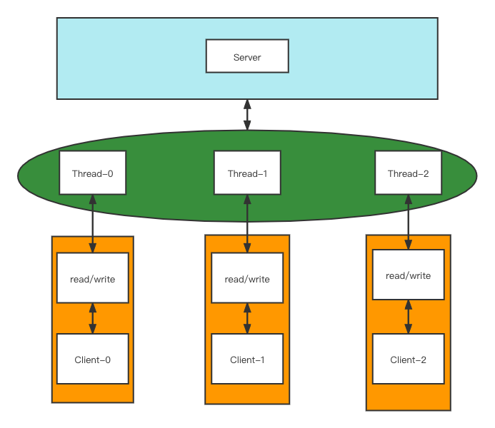
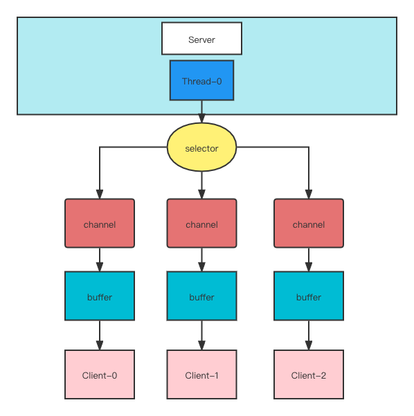

NIO 网络编程
2021-10-26 17:16 字数：1941 标签： Java 网络编程IO模型
有三个重要的IO模型：
-
BIO 同步阻塞IO
-
NIO 同步非阻塞IO
-
AIO 异步IO
同步与异步。它们是相对于应用程序与系统内核交互讨论的。
同步是应用触发IO操作等待或轮询数据读写就绪；异步采取订阅-发布模式，应用发送IO请求给内核，然后应用进行其他操作并订阅回复的消息，是内核触发IO操作，当数据的读写完成时，发布消息回给应用。
阻塞与非阻塞。它们是相对于IO的就绪状态，应用采取的处理方式讨论的。
当数据不可写入，或者是说，无数据可读时，如果采取阻塞方式，应用将等待数据可读可写为止，线程自然会挂起；如果采用非阻塞方式，有数据可读可写则进行操作，没有则不等待直接返回，常常通过循环来轮询数据读写是否就绪，线程不挂起，比起阻塞有更好的响应速度。
BIO模型
BIO模型简单，适合连接数量少且固定的场景（这里的少是指千量级及其以下）。一个连接对应一个线程处理IO，可通过线程池方式来缓冲连接请求，提升高可用。
简单例子：
ServerSocket
- 创建ServerSocket，绑定端口10086；
- ServerSocket接受连接得到Socket，获取输入和输出流；
- 通过输出流发送和输入流接受数据。
public class BIOServer {
public static void main(String[] args) {
try {
ExecutorService exec = Executors.newFixedThreadPool(10);
ServerSocket server = new ServerSocket(10086);
System.out.println("服务端端口号--10086");
while (true) {
Socket client = server.accept();
System.out.println("客户端连接成功");
exec.submit(()->{
System.out.println("线程ID:"+Thread.currentThread().getId());
System.out.println("线程名称:"+Thread.currentThread().getName());
try {
InputStream in = client.getInputStream();
BufferedReader reader = new BufferedReader(new InputStreamReader(in));
while (true) {
Optional<String> msg = Optional.ofNullable(reader.readLine());
if (!msg.isPresent()) {
break;
}
System.out.println("客户端消息:"+msg);
}
} catch (IOException e) {
e.printStackTrace();
}
});
}
} catch (IOException e) {
e.printStackTrace();
}
}
}
Socket
- 创建Socket，绑定ip和端口，然后发送连接
- Socket获得输入流和输出流
- 通过输入流接受和输出流发送数据
public class BIOClient {
public static void main(String[] args) {
try (Socket socket = new Socket("127.0.0.1", 10086)) {
OutputStream out = socket.getOutputStream();
System.out.println("客户端连接成功");
PrintWriter writer = new PrintWriter(out, true);
writer.println("hello");
System.in.read();
} catch (UnknownHostException e) {
e.printStackTrace();
} catch (IOException e) {
e.printStackTrace();
}
}
}

NIO模型
NIO模型复杂度稍微高了一点，适合请求量较多且短连接的场景（至少大到十万量级别）。
BIO单向的流处理输入输出，而NIO是以块的形式处理，而且是双向的。
BIO是基于字节流和字符流操作，而BIO是基于缓冲区(Buffer)和通道(Channel)操作的，进一步可通过同一个轮询器(Selector)监听多个客户端通道和一个服务器通道事件，进行读写操作，即多路复用。
数据总是通过缓冲区写入通道，亦或者从通道读入缓冲区。

核心类是：Selector（包括SelectionKey）、Channel、Buffer
简单例子:
ServerSocketChannel
初始化
- 创建ServerSocketChannel，绑定端口，设置非阻塞；
- 将ServerSocketChannel注册到Selector，设为监听接受连接事件；
轮询
- 通过Selector轮询通道，0表示未选择到通道，大于0表示有可选择通道；
- 通过selectionKeys方法获取数据已就绪的通道；
- 通过key.isAcceptable判断，ServerSocketChannel接受客户端通道并注册到Selector，设为监听读数据事件；
读/写数据
- 通过key.isReadable判断，处理Readable，接受数据。read大于0表示通道还连接可读数据。为-1时，表示客户端断开连接。
public class NIOServer {
public static void main(String[] args) {
try(Selector selector = Selector.open();
ServerSocketChannel server = ServerSocketChannel.open()) {
server.bind(new InetSocketAddress(10086));
// 通道设为非阻塞
server.configureBlocking(false);
server.register(selector, SelectionKey.OP_ACCEPT);
while (true) {
if (selector.select(3000) == 0) {
System.out.println("Server: 等待接受连接中。。。先忙别的");
continue;
}
Set<SelectionKey> selectionKeys = selector.selectedKeys();
Iterator<SelectionKey> keyIterator = selectionKeys.iterator();
while (keyIterator.hasNext()) {
SelectionKey key = keyIterator.next();
if (key.isAcceptable()) {
SocketChannel client = server.accept();
client.configureBlocking(false);
System.out.println("有客户端连接了-"+client.hashCode());
client.register(selector, SelectionKey.OP_READ, ByteBuffer.allocate(1024));
} else if (key.isReadable()) {
SocketChannel client = (SocketChannel) key.channel();
ByteBuffer buffer = (ByteBuffer) key.attachment();
int read = client.read(buffer);
if (read > 0) {
buffer.flip();
System.out.println("客户端消息：" + new String(buffer.array(), 0, buffer.limit(), StandardCharsets.UTF_8));
} else if (read == -1){
client.close();
}
}
keyIterator.remove();
}
}
} catch (IOException e) {
e.printStackTrace();
}
}
}
SocketChannel
- 创建SocketChannel，绑定ip和端口，设置非阻塞
- 发送连接，通过循环finishConnect完成连接
- SocketChannel通过ByteBuffer读/写数据
public class NIOClient {
public static void main(String[] args) {
try (SocketChannel client = SocketChannel.open()) {
client.configureBlocking(false);
InetSocketAddress address = new InetSocketAddress("127.0.0.1", 10086);
if (!client.connect(address)) {
while (!client.finishConnect()) {
System.out.println("连接服务端中。。。可先忙别的");
}
}
String msg = "hi";
ByteBuffer buf = ByteBuffer.wrap(msg.getBytes(StandardCharsets.UTF_8));
client.write(buf);
System.in.read();
} catch (IOException e) {
e.printStackTrace();
}
}
}
注：不熟悉的方法查看api文档